看懂形态，
也看懂它的条件。
从塔形底到红三兵，用六组真实历史行情观察价格如何下跌、整理与回升。每一项都保留识别条件、关键价位和后续表现，让图形有依据，让结论有边界。
六个案例，一览定位
| 序号 | 形态 | 股票 | 代码 | 日K关键日期 |
|---|---|---|---|---|
| 09 | 塔形底 | 贵州茅台 | 600519 | 2024-09-18 — 2024-09-24 |
| 10 | 圆底 | 海螺水泥 | 600585 | 2023-07-03 — 2023-07-25 |
| 11 | 低位并排阳线 | 东方财富 | 300059 | 2023-01-03 — 2023-01-04 |
| 12 | 低档五阳线 | 贵州茅台 | 600519 | 2023-10-25 — 2023-10-31 |
| 13 | 连续跳空三阴线 | 江特电机 | 002176 | 2016-01-26 — 2016-01-28 |
| 14 | 红三兵 | 五粮液 | 000858 | 2023-10-25 — 2023-10-27 |
读图前，先统一口径
阴阳看当日开收盘。红色阳线表示收盘高于当日开盘，绿色阴线表示收盘低于当日开盘。阳线不一定比昨天上涨，阴线也不一定比昨天下跌。
日期按交易日连续。周末和休市日没有日K线。所有案例使用不复权价格；在行情软件复现时，先核对代码，再选择日K与不复权。
先看位置，再看组合。保留形态前的走势与后续K线。相似形状出现在不同位置，含义可能不同；后续表现是验证材料，不是事先能够确定的结果。
原表名称说明：第11项名称与图形、特征不一致，本页依据其图形和文字讲解“低位并排阳线”。第13项使用“实体缺口”口径，影线存在重叠。
返回目录09 塔形底
先跌一根较长阴线，中间磨出小实体，最后一根阳线拉起来。
贵州茅台 600519
形态区间：2024-09-18 — 2024-09-24
建议显示：2024-09-05 — 2024-09-25
{kind=link}
行情入口默认通常显示最新行情，仍需手动定位到本例日期。
形态结构与识别条件
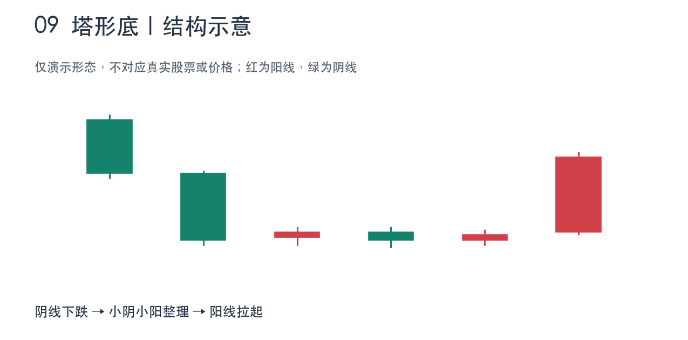
- 形态前有一段下跌或回调，不能只在上涨高位截取几根相似的K线。
- 开始是一根实体较长的阴线，接着是数根小阴线、小阳线或接近十字的K线。
- 最后出现实体较长的阳线，向上离开中间整理区域。
真实行情与局部放大
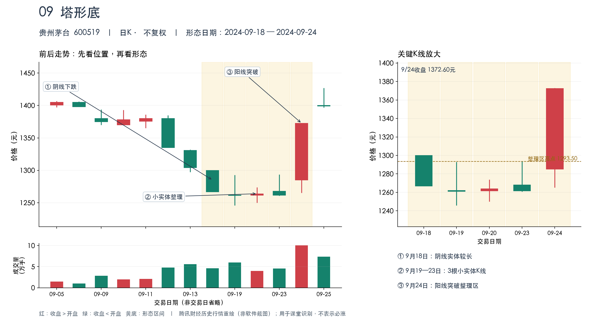
逐日数据 · 元 · 不复权
| 日期 | 开盘 | 最高 | 最低 | 收盘 | 阴阳 |
|---|---|---|---|---|---|
| 2024-09-18 | 1300.00 | 1300.01 | 1266.66 | 1266.90 | 阴线 |
| 2024-09-19 | 1262.00 | 1292.88 | 1245.83 | 1261.00 | 阴线 |
| 2024-09-20 | 1261.50 | 1273.90 | 1250.03 | 1263.92 | 阳线 |
| 2024-09-23 | 1268.00 | 1293.50 | 1260.66 | 1261.54 | 阴线 |
| 2024-09-24 | 1285.09 | 1373.00 | 1265.09 | 1372.60 | 阳线 |
案例解读：从背景到后续
- 先看左侧背景：9月12日、13日及18日继续回落。9月18日开1300.00元、收1266.90元，阴线实体33.10元。
- 再看中间：9月19日、20日、23日的实体长度分别只有1.00元、2.42元、6.46元，明显小于前后两根K线。9月19日和20日影线较长，所以应说‘小实体’，不要说‘整根K线振幅都很小’。
- 最后看右侧：9月24日开1285.09元、收1372.60元，阳线实体87.51元；收盘站上中间三天最高价1293.50元，也超过9月18日开盘1300.00元。
- 量能辅助：9月24日成交量为10.0413万手，约为中间三天平均成交量的2.07倍，伴随向上离开整理区。
- 技术含义：可解释为下跌减速、低位争夺后买方推动价格反弹；这是基于历史形态的解释，不能由图形直接断言‘某个主力已经吸筹完毕’。
常见疑问
塔形底必须几根K线？
没有固定总根数，关键是‘较长阴线—一段小实体整理—较长阳线’。本例共5根交易日K线。
和早晨之星有什么区别？
早晨之星通常按3根K线讨论；塔形底中间是一段整理，不必只限于1根星线。
这是不是大阳线吞没？
可能同时满足其他形态的部分特征，但这次讲解重点是完整的下跌、整理、上行结构。不要只讲最后一根阳线。
按课堂原表的塔形底结构，对真实历史行情进行识别。 本例原始行情
返回目录10 圆底
下跌越来越慢，底部磨一阵，再慢慢上弯，最后看突破。
海螺水泥 600585
形态区间：2023-07-03 — 2023-07-25
建议显示：2023-06-28 — 2023-08-02
{kind=link}
行情入口默认通常显示最新行情，仍需手动定位到本例日期。
形态结构与识别条件
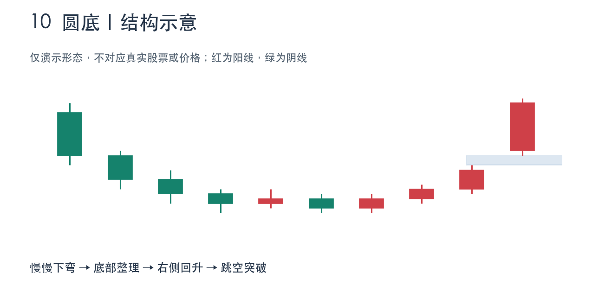
- 下跌后价格重心逐步下弯，随后趋于平缓，再逐渐回升，整体近似U形。
- 圆弧底部多为较小实体K线，可有阴有阳；不要求每天机械地先跌后涨。
- 按原图的教学口径，要观察右侧向上跳空突破作为确认，不把尚未完成的弧形直接称为已确认圆底。
真实行情与局部放大
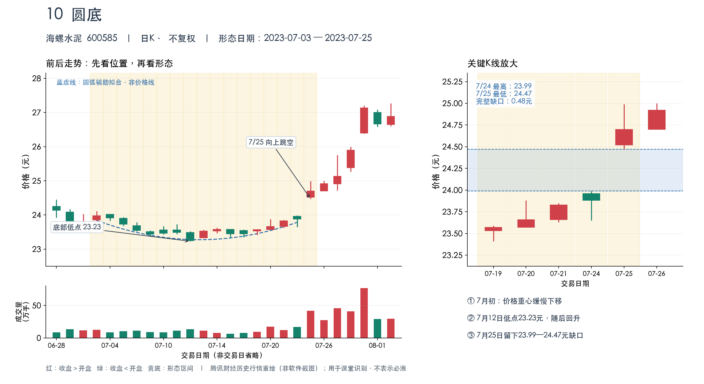
逐日数据 · 元 · 不复权
| 日期 | 开盘 | 最高 | 最低 | 收盘 | 阴阳 |
|---|---|---|---|---|---|
| 2023-07-03 | 23.85 | 24.11 | 23.82 | 23.98 | 阳线 |
| 2023-07-12 | 23.49 | 23.52 | 23.23 | 23.25 | 阴线 |
| 2023-07-19 | 23.53 | 23.59 | 23.41 | 23.57 | 阳线 |
| 2023-07-24 | 23.96 | 23.99 | 23.65 | 23.88 | 阴线 |
| 2023-07-25 | 24.52 | 24.99 | 24.47 | 24.70 | 阳线 |
| 2023-07-31 | 26.40 | 27.20 | 26.38 | 27.14 | 阳线 |
案例解读：从背景到后续
- 左侧下弯：7月3日收盘23.98元，之后价格重心逐渐下移，7月12日收盘23.25元，当日最低23.23元。
- 底部过渡：7月13日至19日，价格在较低区域反复，K线多为小实体，表现为逐步磨底，而不是立即急拉的V形。
- 右侧回升：7月19日收23.57元，20日收23.66元，21日收23.83元，24日收23.88元，收盘重心缓慢抬高。
- 缺口确认：7月24日最高价23.99元，7月25日最低价24.47元，后者高于前者，留下0.48元的完整向上跳空缺口；7月25日收盘24.70元。
- 成交量：7月25日41.68万手，约为前一交易日16.8474万手的2.47倍；随后7月31日收盘达到27.14元。这是后续事实，不意味着当时能预知涨到哪里。
- 边界说明：本例是短周期、近似圆弧的教学实例，不是数学上完美对称的圆，也不是横跨数月的大型圆底。图中蓝虚线只是辅助拟合，不能当成均线或实际成交价格。
常见疑问
圆底和塔形底怎么区分？
圆底主要看价格重心的渐变弧度；塔形底主要看两侧较长K线和中间小实体整理的组合。
一定要用周K吗？
不一定。老师允许日K或周K，本例用日K即可；切换周K会把多根日K合并，不能照搬日线日期。
图中的蓝色弧线是什么？
它是为了课堂识别而添加的辅助拟合，不是原始价格线，也不是交易软件必须自带的指标。
圆弧归类带有形态判断成分；关键最低价、缺口和成交量均可逐日核对。 本例原始行情
返回目录11 低位并排阳线
原表第11项标题存在不一致；此处按图形与特征命名。
先向下跳空，再出现两根位置相近的阳线。
东方财富 300059
形态区间：2023-01-03 — 2023-01-04
建议显示：2022-12-14 — 2023-01-10
{kind=link}
行情入口默认通常显示最新行情，仍需手动定位到本例日期。
形态结构与识别条件
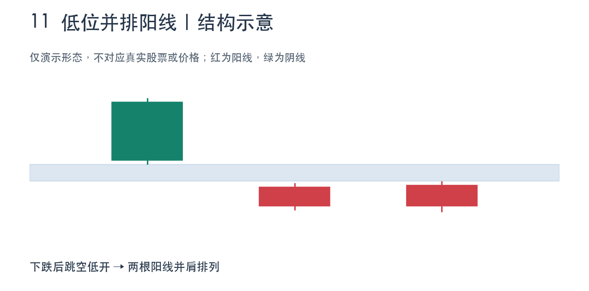
- 出现在下跌或回调后的相对低位。
- 第一根阳线跳空低开，在前一根K线下方留下缺口。
- 第二根也是阳线，与第一根在相近价格区域并排；实际走势的实体和影线不必完全相同。
真实行情与局部放大
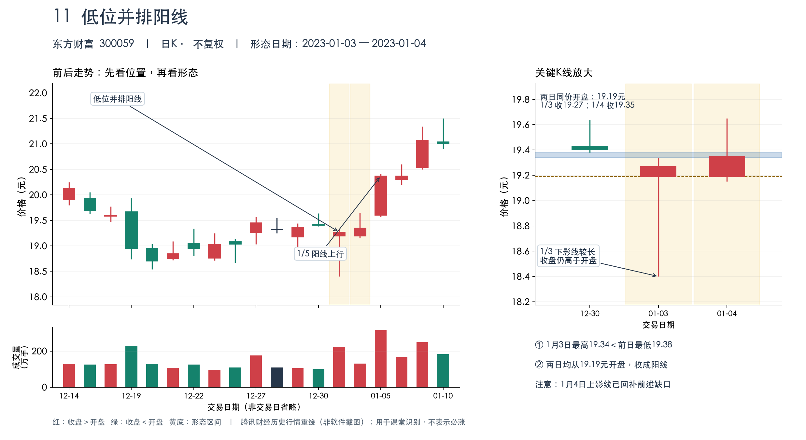
逐日数据 · 元 · 不复权
| 日期 | 开盘 | 最高 | 最低 | 收盘 | 阴阳 |
|---|---|---|---|---|---|
| 2022-12-30 | 19.43 | 19.64 | 19.38 | 19.40 | 阴线 |
| 2023-01-03 | 19.19 | 19.34 | 18.40 | 19.27 | 阳线 |
| 2023-01-04 | 19.19 | 19.65 | 19.15 | 19.35 | 阳线 |
| 2023-01-05 | 19.60 | 20.41 | 19.57 | 20.37 | 阳线 |
案例解读：从背景到后续
- 名称纠错：原图第11行写成‘旭日东升’，但旁边的‘两根阳线、第一根跳空低开、后面并肩而立’描述以及图形，对应低位并排阳线。第5行才是另外一种‘旭日东升’结构。本页采用与图形和特征一致的名称。
- 背景：2022年12月中下旬，东方财富从20元附近回落到19元附近，再在低位反复。2023年1月3日还下探到18.40元，因此本例属于回调后的低位区域。
- 第一根阳线：2023年1月3日开19.19元、收19.27元。它当天最高价19.34元，仍低于前一交易日2022年12月30日最低价19.38元，存在0.04元的完整向下缺口。元旦休市，所以12月30日与1月3日是相邻交易日。
- 第二根阳线：1月4日仍开19.19元，收19.35元。两天开盘完全相同，收盘只差0.08元，阳线实体在相近位置并排；第一根下影较长，第二根实体较长，属于真实行情中的非完全对称版本。
- 不要漏讲：1月4日最高19.65元，日内已经回补前述0.04元缺口；不能说两天的整根K线都始终处于缺口下方。两日收盘仍低于19.38元。
- 后续确认：1月5日收20.37元，超过并排两天的最高价19.65元；成交量约315.32万手，较1月4日约130.09万手放大。实际判断应结合这种后续表现，不能仅凭两根阳线宣布反转。
常见疑问
为什么不照表格名称叫旭日东升？
因为原表第11行名称与图形、特征不一致；按图形和两根阳线的描述，应是低位并排阳线。
两根阳线必须一模一样吗？
不必。本例开盘完全相同，收盘接近，但影线和实体大小不同，应称实盘变体，不要宣称是完全对称的标准图。
为什么1月3日收阳，却比上一天便宜？
阳线比较当日收盘与开盘；涨跌比较当日收盘与前一交易日收盘。19.27大于19.19，但小于前收19.40，两者不矛盾。
按原图的图形和特征识别；华西证券投教也提醒，完全标准的低位并排阳线并不多见。 本例原始行情
返回目录12 低档五阳线
下跌后的低位，连续数出五根小阳线；不要求连续五天涨。
贵州茅台 600519
形态区间：2023-10-25 — 2023-10-31
建议显示：2023-10-12 — 2023-11-03
{kind=link}
行情入口默认通常显示最新行情，仍需手动定位到本例日期。
形态结构与识别条件
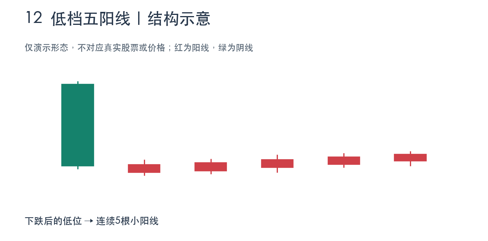
- 前面有下跌，形态处于相对低位。
- 连续5个交易日收盘价高于各自开盘价，多为小阳线。
- 不要求5天收盘价天天创新高；表格也说明有时可出现6根、7根，本例选择恰好5根。
真实行情与局部放大
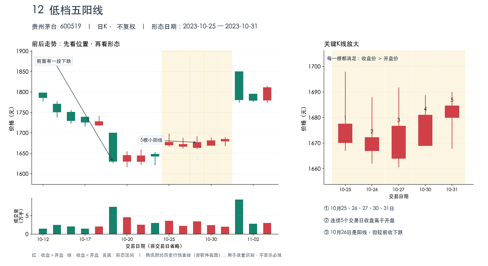
逐日数据 · 元 · 不复权
| 日期 | 开盘 | 最高 | 最低 | 收盘 | 阴阳 |
|---|---|---|---|---|---|
| 2023-10-25 | 1670.11 | 1698.00 | 1667.02 | 1677.50 | 阳线 |
| 2023-10-26 | 1667.00 | 1688.00 | 1662.01 | 1672.23 | 阳线 |
| 2023-10-27 | 1664.00 | 1691.88 | 1660.60 | 1676.71 | 阳线 |
| 2023-10-30 | 1669.00 | 1688.88 | 1669.00 | 1681.00 | 阳线 |
| 2023-10-31 | 1680.00 | 1690.00 | 1667.85 | 1684.58 | 阳线 |
案例解读：从背景到后续
- 背景：10月中旬茅台出现回落，10月19日收盘1630元、10月20日最低1616.25元，后面进入较低位置的震荡。
- 五根阳线的日期是10月25日、26日、27日、30日、31日。28日、29日是周末，不计交易日。
- 开收盘逐个核对：1670.11→1677.50；1667.00→1672.23；1664.00→1676.71；1669.00→1681.00；1680.00→1684.58，五天都收在各自开盘之上。
- 五根实体分别7.39、5.23、12.71、12.00、4.58元，相对于约1660—1690元的股价都是小实体，最高实体涨幅也不足1%。
- 最容易被问的一点：10月26日收盘1672.23元，低于前日1677.50元，但高于当日开盘1667元，所以它是‘较前收下跌的阳线’，仍应计入五阳线。
- 后续11月1日收盘1780.99元，高于10月31日。它自身却是一根高开低走的阴线，因为开盘1850元。这进一步说明阴阳颜色与较前收涨跌不是一回事；也不能把后续所有涨幅都归因于前面的形态。
常见疑问
五阳线就是五连涨吗？
不是。五阳线只要求每天收盘高于当天开盘。10月26日就是反例。
中间有周末还算连续吗？
算，连续是连续交易日，不是连续自然日。
与红三兵有什么区别？
低档五阳线重点是低位连续小阳线，重心不必每天明显抬高；红三兵强调3根阳线逐步上攻、收盘和实体位置向上推进。
这一例可直接用原图第12项的条件逐日核对；并未将‘五阳’等同于‘五连涨’。 本例原始行情
返回目录13 连续跳空三阴线
本例采用实体缺口口径，不满足连续三个全天完整缺口的严格定义。
三根阴线、连续低开；可能接近恐慌末端，但不能提前认定见底。
江特电机 002176
形态区间：2016-01-26 — 2016-01-28
建议显示：2016-01-15 — 2016-02-04
{kind=link}
行情入口默认通常显示最新行情，仍需手动定位到本例日期。
形态结构与识别条件
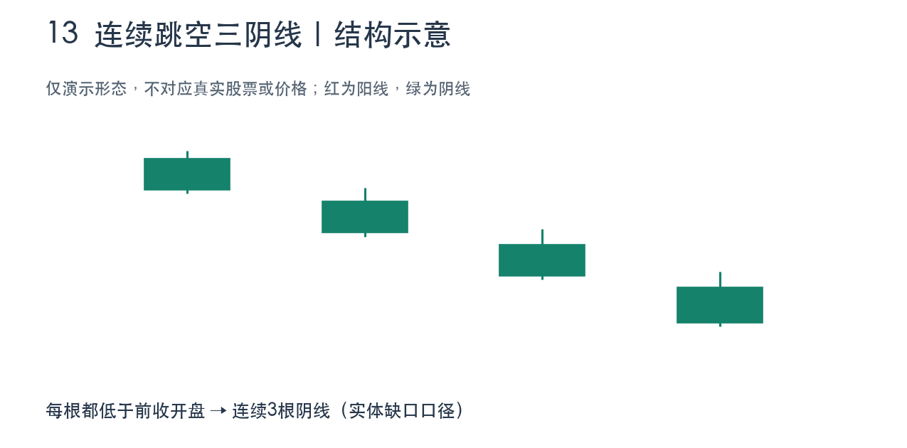
- 出现在下跌趋势或一段明显下挫之后。
- 连续3根K线都是阴线，且每根开盘价低于前一交易日收盘价，留下实体之间的低开缺口。
- 要说明缺口口径：实体缺口允许影线重叠；全天完整缺口要求当日最高价低于前日最低价。本例验证的是实体缺口。
真实行情与局部放大
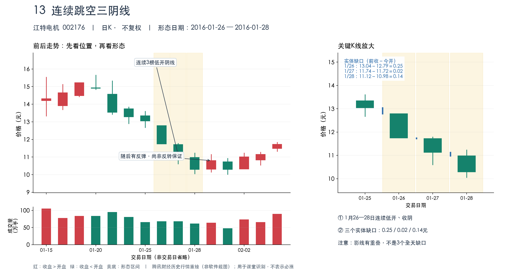
逐日数据 · 元 · 不复权
| 日期 | 开盘 | 最高 | 最低 | 收盘 | 阴阳 |
|---|---|---|---|---|---|
| 2016-01-25 | 13.35 | 13.62 | 12.66 | 13.04 | 阴线 |
| 2016-01-26 | 12.79 | 12.79 | 11.74 | 11.74 | 阴线 |
| 2016-01-27 | 11.72 | 11.80 | 10.59 | 11.12 | 阴线 |
| 2016-01-28 | 10.98 | 11.25 | 10.04 | 10.29 | 阴线 |
| 2016-01-29 | 10.30 | 11.17 | 10.13 | 10.80 | 阳线 |
| 2016-02-01 | 10.74 | 10.95 | 10.00 | 10.29 | 阴线 |
案例解读：从背景到后续
- 主讲三根为2016年1月26日、27日、28日；1月25日仅作为第一处缺口的前一日参照，不要把四天全部称为三根阴线。
- 1月26日：前收13.04元，当日开12.79元、收11.74元，开盘比前收低0.25元，且收盘低于开盘。
- 1月27日：前收11.74元，当日开11.72元、收11.12元，实体间低开缺口0.02元，同样收阴。
- 1月28日：前收11.12元，当日开10.98元、收10.29元，实体间低开缺口0.14元，同样收阴。
- 严格口径辨别：1月26日最高12.79元高于1月25日最低12.66元；1月27日最高11.80元高于前日最低11.74元；1月28日最高11.25元高于前日最低10.59元。因此本例的三个位置都不是‘全天最高与前日最低不重叠’的完整缺口。
- 为什么表格把它放在见底形态里：传统解读是下跌加速后可能出现卖压衰竭，但图形本身也说明市场仍很弱。1月29日有反弹，可2月1日最低10.00元，仍低于1月28日最低10.04元，所以不能说第三根阴线一收盘就已经确认见底。
- 华西证券投教使用过这一历史区间作为实例；本材料重新核对了开高低收，并保留随后反复的走势，避免只展示反弹部分。
常见疑问
和普通三连阴有什么区别？
普通三连阴只说3天收阴；本形态还要求每根向下跳空低开。本例用前收与今开逐项计算。
是不是三处完整缺口？
不是。此例是实体缺口，影线重叠；如果老师只认可全天完整缺口，应明确此例不满足那个更严格版本。
为什么下跌形态能出现在见底信号表里？
表格采用的是可能衰竭的传统解释，不是确定性结论。要结合跌幅背景和后续价格确认，不能忽略持续下跌的可能。
定义及历史实例参考华西证券投教《连续跳空三阴线，加速下跌还是止跌企稳？》，原始价格另由腾讯历史行情核对。 本例原始行情
返回目录14 红三兵
三根阳线排队向上走，收盘一天比一天高。
五粮液 000858
形态区间：2023-10-25 — 2023-10-27
建议显示：2023-10-13 — 2023-11-02
{kind=link}
行情入口默认通常显示最新行情，仍需手动定位到本例日期。
形态结构与识别条件
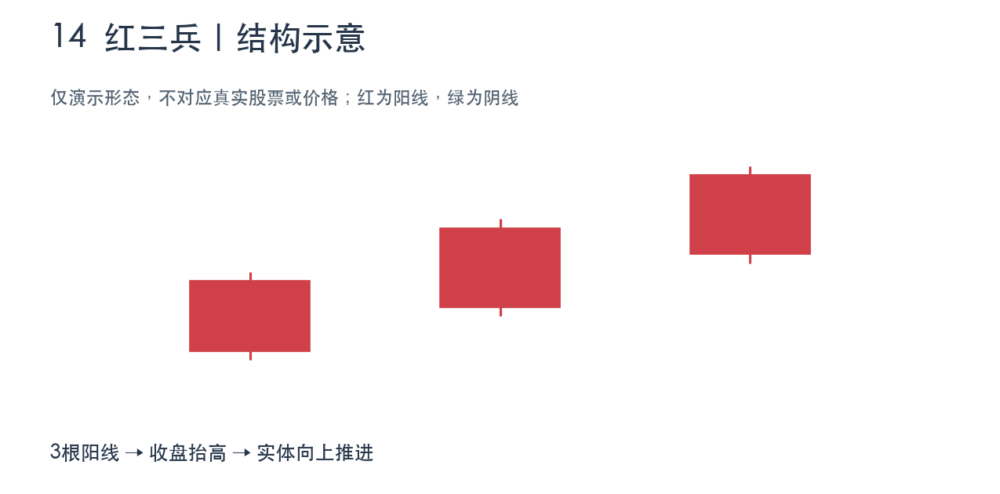
- 通常观察下跌后或盘整后的初步回升阶段，而非只看已经大涨后的高位。
- 连续3根阳线，收盘价逐日抬高，实体向上推进。
- 较规范的版本中，后两根开盘处在前一根阳线实体内，收盘接近当日高位；本例符合前一项，第一根上影稍长。
真实行情与局部放大
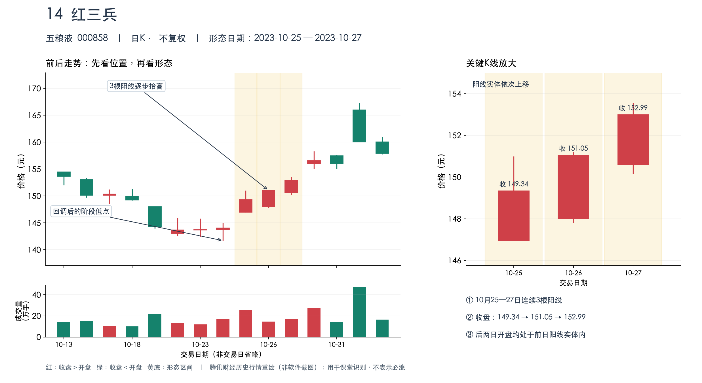
逐日数据 · 元 · 不复权
| 日期 | 开盘 | 最高 | 最低 | 收盘 | 阴阳 |
|---|---|---|---|---|---|
| 2023-10-25 | 146.95 | 151.00 | 146.95 | 149.34 | 阳线 |
| 2023-10-26 | 148.00 | 151.20 | 147.80 | 151.05 | 阳线 |
| 2023-10-27 | 150.57 | 153.55 | 150.16 | 152.99 | 阳线 |
| 2023-10-30 | 155.95 | 158.36 | 155.00 | 156.60 | 阳线 |
案例解读：从背景到后续
- 背景：五粮液在10月中旬有回调，10月24日最低141.70元；随后选取25日至27日三根阳线，属于回调后的初步回升阶段。
- 10月25日开146.95元、收149.34元；26日开148.00元、收151.05元；27日开150.57元、收152.99元。三根都满足收盘高于开盘。
- 收盘价149.34→151.05→152.99元，连续抬高；最高价也从151.00→151.20→153.55元，逐步抬高。
- 开盘的位置：26日开148元，处在25日实体146.95—149.34元之内；27日开150.57元，处在26日实体148.00—151.05元之内。
- 影线与量能：第一根上影1.66元，并非三根都光头；成交量约25.44、14.62、17.07万手，也不是逐日放量。因此可归为红三兵，但并非“无上影、连续放量”的更强版本。
- 后续10月30日收156.60元，高于第三根收盘，这是随后继续上行的事实；在形态出现当天，仍然不能保证未来会照这个路径发展。
常见疑问
三天阳线就一定是红三兵吗？
不够，还要看连续上攻、收盘抬高以及前面的走势位置。本例后两天开盘都位于前一阳线实体之内。
这是不是三个白色武士？
不同教材术语有差异。按课堂原表的备注，较强版本强调收在最高或接近最高；本例第一根上影较明显，不需要夸大为最强版本。
成交量有没有逐日放大？
没有。25日至27日约为25.44、14.62、17.07万手，应如实说价格推进但量能并非连续递增。
按课堂原表第14项进行识别，并额外核对实体关系、收盘和最高价，明确量能与影线的限制。 本例原始行情
返回目录